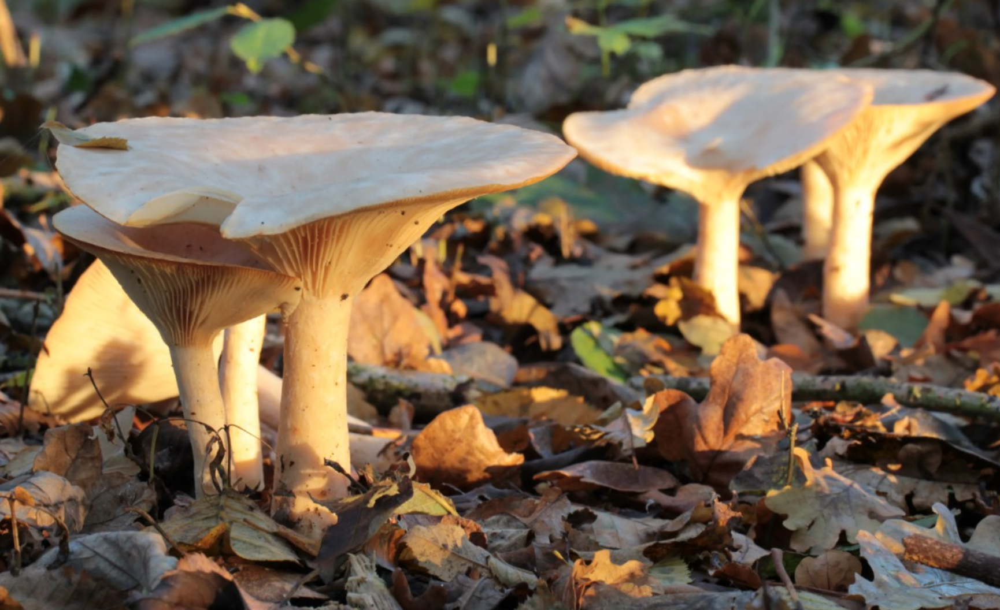

Говорушка
|
 |
Говорушка, клито́цибе (лат. Clitоcybe) — род шляпочных грибов семейства Рядовковые (лат. Tricholomataceae).Этимология названия точно не известна, есть версия, что оно пошло оттого, что растут грибы плотной кучкой, как собравшиеся вместе говорливые приятели. Располагаются они по кругу, и долгое время такие грибные круги из говорушек считались проклятым местом, "ведьмиными кругами". Говорушки относятся к семейству Рядковых. Грибы небольшого размера, диаметр шляпки не превышает 6 см, цвет может быть серовато-коричневым, белым или палевым. Поверхность сухая и гладкая, без слизи. В центральной части может присутствовать углубление. Ножка цилиндрической формы, ее диаметр составляет от 0,5 до 1 см. Пластинки очень светлые, как и споровый порошок. |
Где растут говорушки
Растут говорушки большими группами, наткнувшись на которые можно заполнить все ведерко. Встретить гриб можно в разной местности, зависит это от вида. Например, Крымские леса пестрят красноватыми говорушками, которые массово растут на открытых полянах, залитых солнечным светом. Беловатый вид чаще всего встречается около березовых и еловых посадок, особенно много этих грибов в Сибири и на Урале. Дымчатые говорушки предпочитают прелую листву под соснами и елями.
Когда собирать говорушки
Период роста у говорушек начинается с наступлением теплой погоды при высокой влажности. В некоторых регионах встретить гриб можно уже в середине лета, но пик активности выпадает на сентябрь — октябрь. При благоприятных условиях может расти до ноября.